tOps
tems サーバーをリモートで運用するツール。
複数の現場をひとつの画面で監視し、現場に行かなくても再起動 · 設定の点検と変更 · 配布まで行えます。スマートフォン(Android)とオフライン作業にも対応しました。

運用者が毎日行う作業をひとつのプログラムで
ダッシュボード · モニタリング
グループ内のすべてのノードの状態をひとつの画面に集め、注意が必要な項目を先に表示します。項目をクリックすると、そのノードの該当画面に直接移動して対処できます。
- サイト健全性スコア、ノードごとの状態カード、tems プロセス・機器通信の概要
- イベントの24時間ヒートストリップと最近のイベント(種類別の色)
- カードのドラッグ移動・拡大表示、監視モード(全画面・大きな文字)
- ノード100台以上 - 縮小表示へ自動切替、上位 N リソース、10列拡大ウィンドウ
- サーバーごとの色テーマで現場の取り違えを防止、接続切れは別途表示
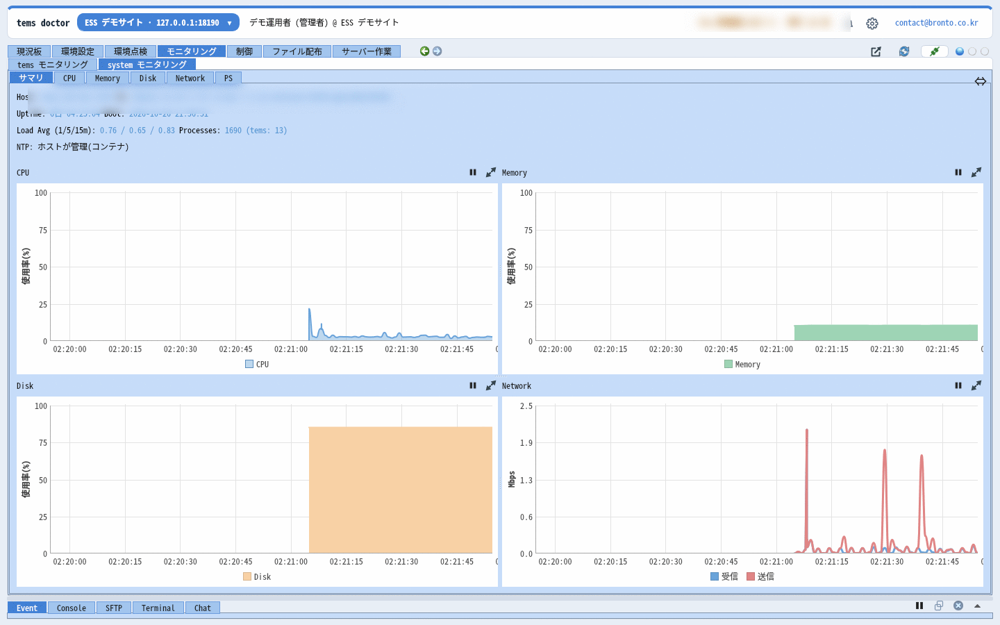
tems 環境チェック NEW
tems の環境設定を temsconfig.xml からつながるすべてのファイル(XML・.conf)まで一度に点検します。tems が設定を無視したり起動・制御に失敗したりする問題(エラー)、動作はするが意図と異なる可能性があるもの(警告)、参考(情報)に分けてお知らせします。
- プロセス一覧 → 環境ファイル → 接続ファイル → データマップ → 機器 → スレーブマップの6段階
- ルール番号・ファイル・行で結果を表示し、ダブルクリックでその行をエディターで開く
- 機器の slave_id、データマップのビット溢れ、tpool のリンク先など、ファイル間の関係まで
- レポートとして保存し、現場点検の記録に残す
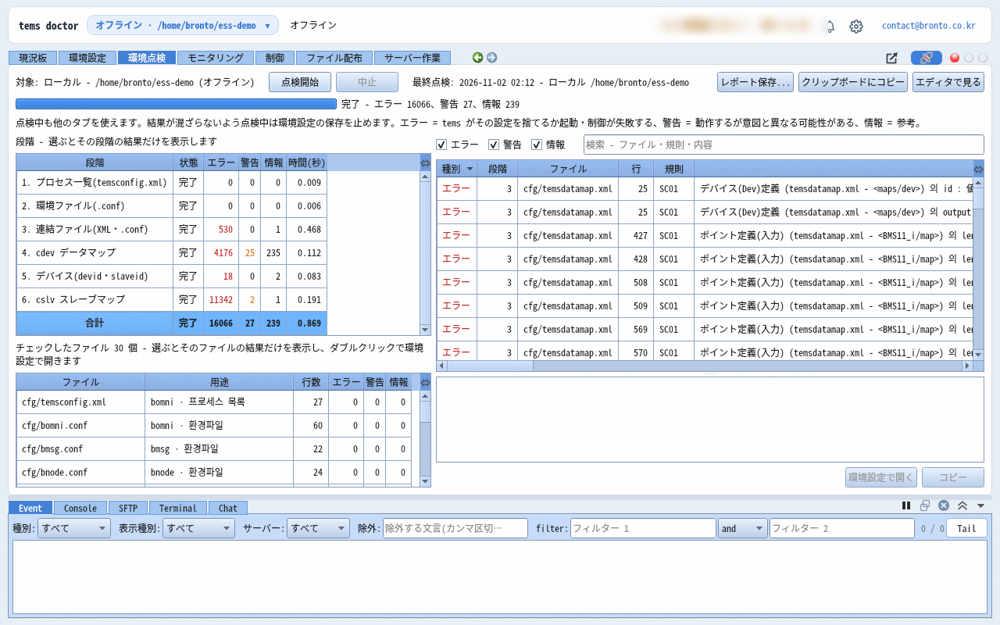
検証付きの設定編集
tems の設定ファイルをテキストで直接書き換えるのではなく、項目ごとの説明と許容範囲が付いた画面で編集します。データマップやスレーブマップのような数千行の XML も表として1秒ほどで開き、機器ごとに分けて表示できます。
- プロセスごとの設定 · XML レコードを表で編集、原文の直接編集(行番号)
- 値の形式・範囲を検証し、保存前に環境チェックと同じルールでファイルを検査
- 誤りのある行をダブルクリックするとその行へ移動
- テキスト画面から外部エディターで開き、エディターで保存するとすぐに反映
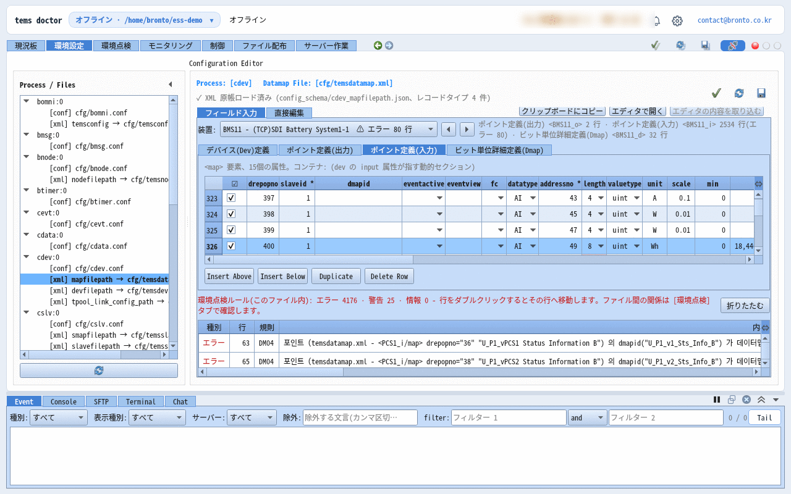
オフラインモード NEW
サーバー(brontod)に接続せずに、PC 上の tems 設定フォルダーを直接開いて編集・点検します。現場に出向く前にオフィスで設定を準備したり、インターネットが使えない場所で作業したりするときに使います。
- 接続画面の [オフラインで開く…] または起動オプションでローカル作業フォルダーを指定
- 環境設定・環境チェックをオンラインと同じ画面で
- あとで接続し、ファイル配布でサーバーに反映
- 以前開いたローカルフォルダーをメニューから選んですぐに切り替え
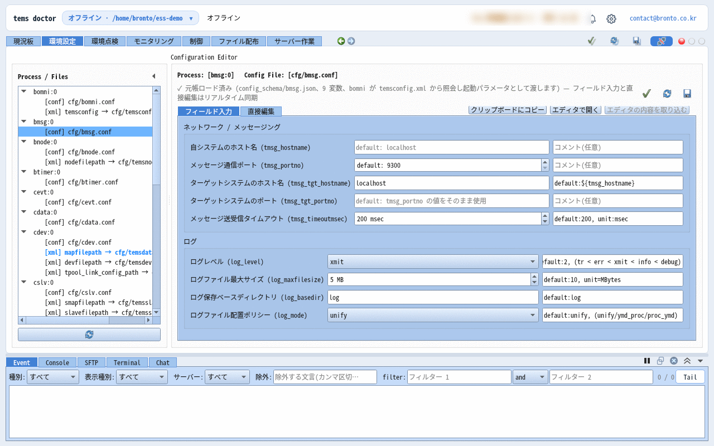
プロセス制御
tems の各プロセスの状態をリアルタイムで確認し、起動 · 停止 · 再起動をリモートで実行します。
- プロセスごとの実行状態 · Copy No · リソース使用量
- 起動 · 停止 · 再起動をリモート実行
- 制御権限の要求・承認で同時操作を防止
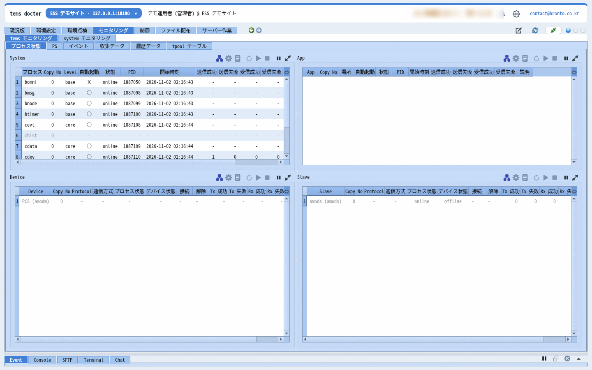
ファイル配布 · バックアップ · ロールバック
新しいバージョンのファイルを複数のサーバーに一度に配布し、配布前の状態を自動で保管します。問題が起きたら以前の状態に戻します。
- 複数サーバーへの一括配布、ノード単位の全体進捗
- 配布前の自動バックアップ · ロールバック · 配布後の再起動
- 保管容量の上限管理
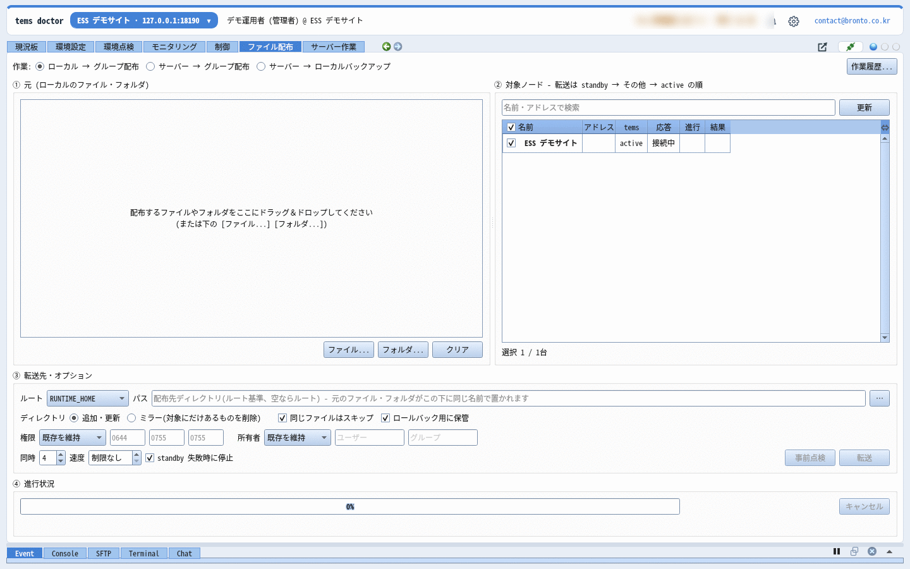
サーバー作業 · リモートインストール・アップグレード
よく使う点検コマンドを作業として登録しておき、サーバーを選んで実行し、結果をすぐに確認します。brontod を新しいサーバーにリモートでインストールしてグループに参加させたり、複数のサーバーを一度にアップグレードしたりできます。
- 内蔵作業: tems・brontod のインストール · 環境 · 運用セット
- 他サーバー(SSH)作業 - 複数の対象と対象ごとの SSH・sudo パスワード
- brontod のアップグレード: 変更されたファイルだけを事前に送り、一斉に置き換えて即時再起動
- 組込み機器(dropbear・busybox)もリモートインストール・参加チェック
- SFTP・ターミナル: ホストキーが変わると旧・新のフィンガープリントを表示し確認後に接続、パスワードログインを禁止したサーバーでは原因と解決方法を案内
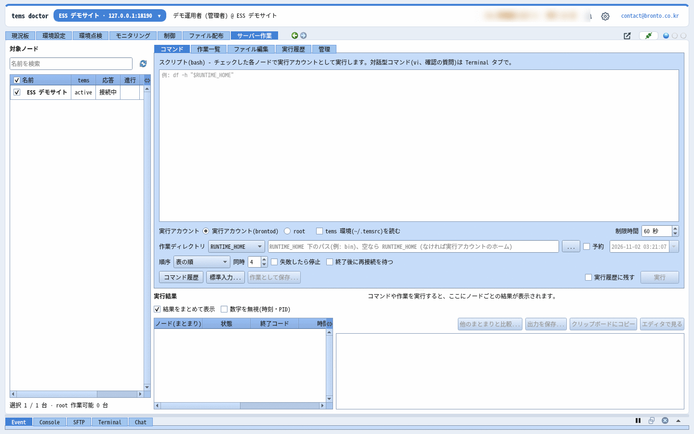
アカウント · グループ · チームチャット
運用チームのメンバーごとにアカウントを用意し、グループ単位でサーバーへのアクセスを分けます。同じサーバーを見ているメンバー同士ですぐに会話できます。
- ID またはメールアドレスでログイン、アカウント · グループごとのアクセス権限
- グループハブ接続 - 一か所のハブが状態・イベントを中継し、大規模なグループも軽快に
- 参加リクエストの承認 · 複数ノードの brontod 再起動・停止 · 別のグループへの移動
- 危険なコマンドはサーバー(brontod)でもう一度検証、グループチャットで対応を共有
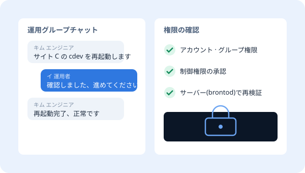
tVault と連携 - 配布・ライセンス NEW
tdoctor と brontod は tVault でインストール・更新します。顧客サーバーの brontod は、顧客の担当者が承認した機器だけが指定した時刻に更新されます。tdoctor は tVault のライセンスで Basic · Pro を区別します。
- インストーラーひとつで tdoctor のインストール · スタートメニュー · 通知領域アイコン
- 更新通知: 今すぐ · あとで · スキップ、変更内容の表示
- Pro: 複数ノードへのファイル配布・サーバー作業 / Basic: 1ノードずつ
- ライセンスファイルの署名・PC 確認、コピーは Pro トライアル10日間
- Web サイトから 14日間の Pro トライアル - お申し込みいただくとインストーラーがメールで届きます

スマートフォンでも - tdoctor Android アプリ
PC の tdoctor で行っていた作業のほとんどをスマートフォンで行えます。ダッシュボード・システムグラフ・グループ状態ボード、プロセスの起動・停止、サーバー作業とコマンド実行、サーバーファイルの表示・ダウンロード・アップロード、tems データ(tpool・履歴・収集)、新しいファイルの配布、環境チェックと設定原文の編集、チャットルームの作成・招待、監査ログまで。tems の故障・警報とチャットは、アプリを閉じても · 画面が消えていても · 再起動したあとでもスマートフォンに通知が届きます。
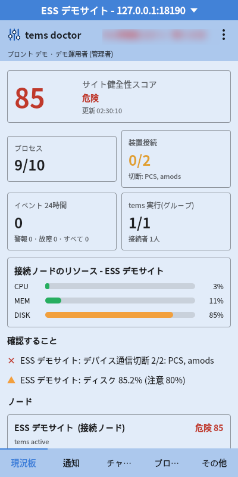
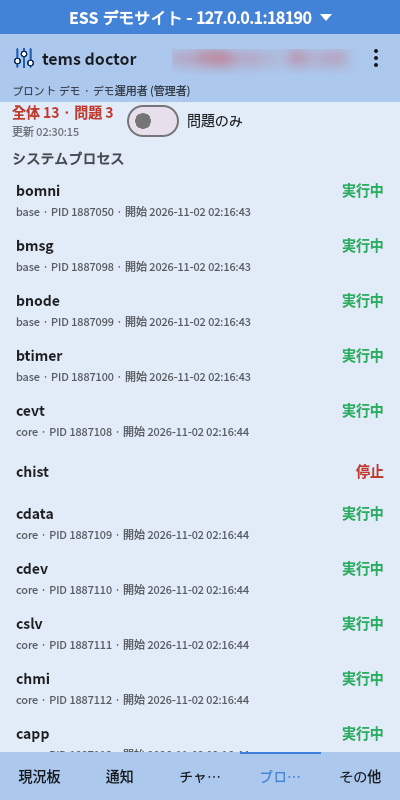
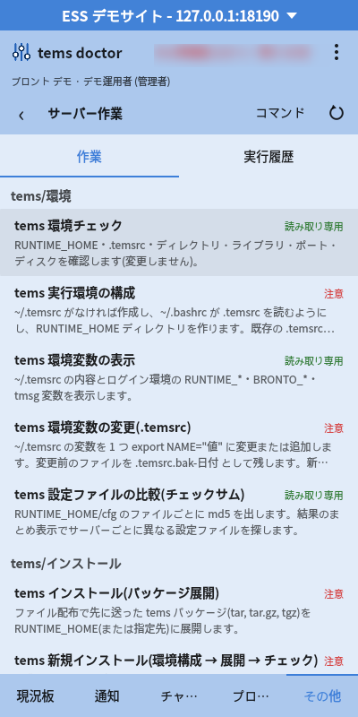
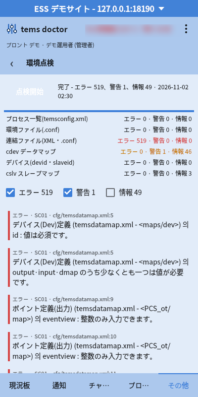
PC · tdoctor
Windows · Linux の運用者 PC ですべての機能を使えます。韓国語・英語・日本語・中国語の画面、言語ごとの等幅フォントを同梱。
サーバー · brontod
tems が動作する x64 · ARM64 Linux サーバーと組込みコントローラーにインストールします。システムリソースを1秒ごとに収集し60分保持します。
モバイル · Android
韓国語・英語・日本語・中国語の画面、PC と同じサーバーテーマ・マーカー。パスワードは Android Keystore で暗号化して保存し、自動ログインします。ライセンスはアプリが tVault に直接登録して取得し、アカウントごとに PC 1台 + スマートフォン1台を使えます。
単体で、または tems と一緒に
tOps 単体
- すでに tems サーバーを運用している場合
- 複数現場の運用業務を一か所に集めたいとき
- 現場に行かずに障害に対応したいとき
tOps を実際に使ってみてください
tdoctor を14日間、Pro の全機能で無料でお試しください。テストサーバーや画面デモが必要な場合はお問い合わせください。